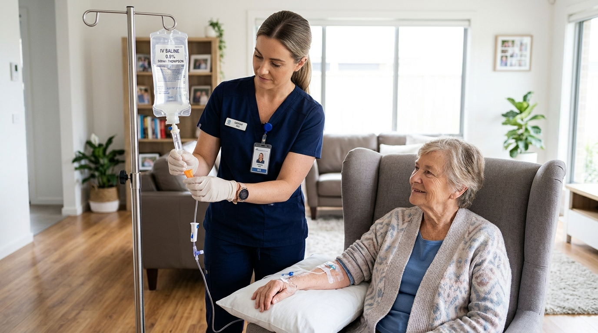

MEDICAL THERAPY
IV Drip / IV Therapy at Home
Home-based administration of prescribed IV fluids and hydration therapy.
Enquiries for prescribed albumin infusion, subject to specialist medical authorization, appropriate clinical assessment, qualified personnel, suitable monitoring and confirmation that the treatment can safely be provided in the intended setting.
Human Albumin (5% or 20%) is a concentrated human plasma protein derivative with potent oncotic fluid-shifting properties. It is prescribed strictly by gastroenterologists, hepatologists, nephrologists, or critical care physicians for conditions like severe hypoalbuminemia, liver cirrhosis with refractory ascites, or post-paracentesis. It is never a routine hydration drip, wellness infusion, or cosmetic therapy.
Because albumin draws significant intravascular fluid volume rapidly into circulation, it carries clinical risks of hypervolemia, acute pulmonary edema, hypertension, or allergic hypersensitivity if not administered under stringent medical criteria.
We accept enquiries for prescribed albumin administration in Gurugram strictly on a case-by-case evaluation basis. Each enquiry undergoes multi-point clinical screening: specialist physician authorization review, current renal and cardiac status confirmation, attending nursing qualification verification, and validation that continuous hemodynamic monitoring equipment is in place.
Administration will NOT proceed in the home setting under any of the following clinical conditions:
Albumin is a potent oncotic agent that expands plasma volume rapidly. 100ml of 20% albumin draws approximately 300–400ml of interstitial fluid into circulation. If given too quickly or to a patient with fragile cardiac/renal reserve, it can trigger circulatory volume overload or pulmonary edema.
No. We do not advertise albumin infusion as an automatic or on-demand service. Each enquiry is individually assessed against clinical criteria, physician orders, and availability of qualified clinical nursing personnel.
A formal recommendation from a treating specialist (such as a Hepatologist, Gastroenterologist, Nephrologist, or Hospital Intensivist) is required to ensure that home administration is therapeutically justified and clinically safe.
The visiting nurse uses a precision micro-drip or flow regulator set to carefully titrate the drop rate according to the doctor's prescribed rate (typically 1 to 2 ml per minute for 20% solutions), monitoring blood pressure continuously.